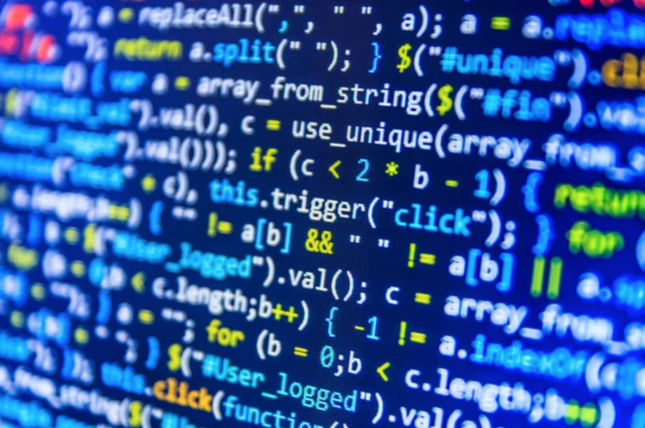

Mijn naam is oualid El Khalki. Ik ben Zestien jaar en ik woon in Gorinchem. IK wooon al mijn hele leven in gorinchem. Mijn ouder zijn geboren in Marokko, ik zelf ben geboren in Nederland ik heb het erg naar mijn zin in Nederland, ik woon samen met mijn ouders, broertjes en zusje. In de zomervakantie ga ik meestal met mijn gezin naar Marokko. dingen die ik leuk vind zijn voetbal, basketbal en gamen, mijn favoriete game is op het moment Fortnite.
Waarom ik heb deze opleiding gekozen omdat het me leuk lijkt om sites te bouwen, en vriend van me vader vertelde mij hier over en zij dat het erg leuk is ook een achterneef van mij vertelde dat het leuk was en hij het met veel plezier de opleiding volgt.  Ik blijf gemotiveerd omdat ik het super leuk vind om het te doen en omdat ik ooit een super groote site wil gaan bouwen voor mijn vader daardoor blijf ik gemotiveerd. om mijn droom te vervullen moet ik thuis ook veel gaan werken en ook moet ik leren zelfstandig te gaan worden, want ik ben helaas nog niet heel erg zelfstandig. Ik moet minder snel opgeven en meer op internet zoeken als ik iets niet snap.